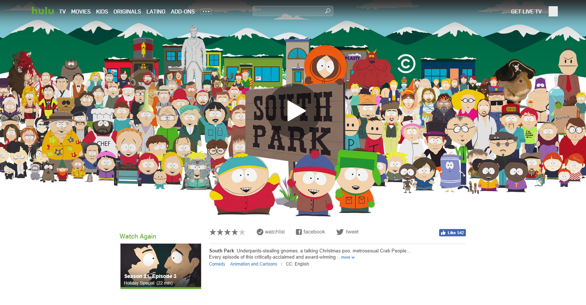

Lewis Nguyen
UX Designer — Interaction Designer — User Researcher
UX Designer — Interaction Designer — User Researcher

Click here to try the interactive version.

Click here to try the interactive version.
At California State University, Fullerton, we were tasked with submitting a project on any topic of our choice. We grouped ourselves into teams of four and were given two weeks to complete the project. My team was interested in understanding more about how active music listeners discovered new music. My role was to prepare a 30 minute interview guide, interview three participants who use streaming music services, convert interviewee responses into data points, contribute them to my team’s total of twelve interviews, assist in creating the affinity diagrams based on common themes among the interviewees, and assemble those themes into three personas. These personas will serve to be our core of future product designs for at the end of our research.
Develop a service to facilitate new music discovery for "affinity listeners" - defined as those who actively seek out music that is similar to what they already listen to.
To observe how people interact with their preferred apps to discover new music online.
Twelve participants will be selected from the researchers’ networks who care about discovering new music. These participants will be interviewed for 20-30 minutes and asked a series of questions. They will be asked to perform a brief music discovery task as well. Each interviewer will provide a half page summary of each interview. If the participant agrees, each interview will be audio recorded by the interviewer.
The team will debrief from the interviews and create an affinity map of findings. From this diagram and the research team’s inferences, three personas will be assembled based on common themes among the responses.
Thone is 43 years old and works as firefighter in Orange County, CA. He listens to music over 20 hours or more per week and estimates that 60% percent of the songs he listens to are new. He enjoys listening to music while at home, driving, working out, and playing sports. His favorite genres are Christian, Rock, Hard Rock, Punk, and Hip-Hop. He considers himself an eclectic music listener. He used to listen to Pandora, but got tired of it crashing, so he switched to Spotify. He doesn’t mind the ads. Thone typically listens to curated radio streams based on Spotify’s Just For You or Genres and Moods. He likes that Spotify offers a list of recommended stations based on his listening history and this is where he often discovers new music. If he finds a song he really likes he will purchase it on iTunes, or save it to one of his Spotify playlists. He will not buy an entire album because he thinks it’s a waste of money. Once he finds a music app that he likes, he sticks with it. Paid subscriptions are a deal breaker for him, but said he might consider trying a paid subscription service if they offered a free trial. He often shares new music discoveries with friends, but only via group texts. If he could design his own music app, it would have the option of playing audio or video tracks (if available). He thinks it would be cool to shop for new music in a music store again.
Chris is 33 years old and works in advertising in Los Angeles, CA. His favorite genres are EDM, Hip-Hop, R&B, Country, and Classical. He listens to music 70 hours or more per week and estimates that 25% of the music he listens to is new. Chris considers himself a “power” music listener. Chris prefers listening to his own playlists over curated streams. He builds playlists for every part of his day. His listens at home, while driving, at work, and working out. His playlists are always evolving based on the latest music releases. Chris also takes “the best of the best” from other people’s playlists and adds them to his, but will not return to someone else’s playlist again. He will follow other artists on Spotify, but doesn’t pay attention to what they’re listening to. He uses Spotify Premium pretty much exclusively and is not concerned about the subscription fees. He thinks it is important to support the artist he listens to buy purchasing their music and prefers to buy entire albums over individual songs. For him, the user experience (sound quality and user interface) is the most important aspect of a music app. He said that he refuses to listen to Apple Music because there is a slight buffering delay when compared to Spotify. His ideal music app would include stats on what he listened to that week and gave him the ability to customize the user interface. He Misses the experience of seeing his music library and the physical aspect of owning records or CDs (artwork, booklets, etc.).
Chantell is 31 years old and works as a purchasing manager in Manhattan Beach, CA. Her favorite genres are Jazz, Blues, Gospel, and Hip-Hop. She listens to music 12-14 hours per week and estimates that 5% of what she listens to is new. She had been listening to Pandora, but recently switched to Spotify Free. She doesn’t mind the commercials. In her opinion, Spotify’s ads are not as “annoying” as those on other music apps. She has some purchased music on her phone, but rarely listens to it. She enjoys discovering new music on Spotify, but prefers to do this on her computer vs. her phone. She will save songs that she likes to one of her playlists, and will purchase songs on iTunes occasionally. When listening to Spotify, she usually starts with a particular song in mind and searches for that song, or will gravitate towards Genres & Moods based on how she’s feeling that day. She says she is reluctant to listen to other people’s playlists as her taste is fairly “eclectic”. She considers her playlists to be very personal and does not share them. Subscriptions are a deal breaker for her and believes music streaming should be free. One of the features she would like to see in a music app is the ability to interact with the app via voice commands. When thinking about how she discovered new music in the past, she mentioned that she misses the tangible aspect of the music listening experience (album art, booklets, music stores etc.).
Erika is a 24 year old woman from Washington state. She is currently studying to become a nurse. She is a big fan of music, and while she will listen to anything except metal and country, her favorite genres are folk and alt rock. She listens to music in the shower, while hanging with friends and on her daily two hour commute. She currently uses Spotify and pays for premium, but due to Apple’s App Store fee pays close to $15 a month for it. She doesn’t think this is worth it and is debating dropping premium. She hates ads and limited skips, however, which is why she hasn’t cancelled her subscription yet. Around 40% of the music she listens to is new to her, and comes from the radio while she is driving or various TV/movie/movie trailer soundtracks. She primarily captures her new music by using shazam to determine the song she is hearing, and then later listening to it on Spotify. She does this to test whether she was just caught up in the emotions, or if the static of the radio was obscuring some detail she doesn’t actually like. She gives each song about 30 seconds - if she likes it, she’ll save it on Spotify and even go on to purchase it through iTunes if she finds herself listening to it often. She estimates about 15-20% of the songs she Shazams she ultimately purchases. While she will go to Youtube if she can’t find a song on Spotify, she finds the video distracting and as on several occasions ceased liking a song if she doesn’t like its video. She creates playlists for different eras of her life, and are more likely to be grouped chronologically by time discovered than genre or mood. In future services, she would like to see a way to discover the music around her without fumbling to capture it on Shazam before someone speaks over it, or she is unable to due to a loud environment. Would love to be able to access a “What’s Playing” list in public places.
Omar is a 30 year old second generation Egyptian who currently lives in Mesa, Arizona and studies medicine. He’s very specific about his prefered genres - Old School R&B, 90s/2000s decade Pop hits, Blues and Techno - but says he will occasionally listen to Top 40 stations on the radio. He primarily listens to music using Pandora or Sirius XM - either the app or in his car - while commuting or in social gatherings. He listens to music about an hour a day. He also considers watching TV shows such as “The Voice” to be listening to new music. He is very specific about which streaming radio channels he listens to, so only a small number of his daily listening is new to him. He rarely creates playlists anymore, because he just doesn’t have the time. He prefers to create channels on Pandora, although he does not actively give feedback as he listens. If it were easier to do so, and he didn’t have to go back to that tab or app, he might. He also occasionally listens to iTunes radio for the same genre specific station reason. For future streaming services, he would love if there was a way to simply start playing music from the home screen with one touch. But he gives this with the condition that it not autoplay if his phone is on silent - he’s had too many accidents in class. He wishes there was some sort of “what you need to know” list for current music - he often finds himself behind when his friends talk about current hits. He rarely talks about his music with anyone else, and often relies on others to take care of the music in social gatherings. His music is just his.
Alexa is a 23 year old white woman from Long Island, NY, currently studying PR in Los Angeles. She will listen to many things, but prefers Classic Rock, Alternative, Hip-Hop and Pop genres. She most often listens at home and work while doing mundane tasks such as emails or housecleaning. She will also always turn music on for social gatherings. She uses Spotify Premium, and decided to pay for it since she has no patience for commercials. She finds it is better than the paying for or pirating each song she used to do. She listens for about two hours a day, and estimates that 20% of that is songs that are new to her. She loves creating playlists, and while she doesn’t actively publish them, she does leave them public on Spotify. She creates these playlists both at home and at work, and primarily uses her laptop to do so. She finds new music mostly through her friends’ recommendations and her Spotify “Discover Weekly” playlist. If she likes a song she will save it on Spotify and incorporate it into a new playlist shortly. She likes her methods and really enjoys Spotify, but does feel like sometimes her playlists get repetitive. She wishes there was a way to create a mood playlist based solely on her existing library. She does use genre and mood playlists on Spotify, and selects them by scanning the playlists until she finds one with a solid mix of new and favorite songs. She doesn’t like how a day of actively searching one genre or artist can sway her entire “Discover” playlist. She listens about equally on her computer and phone. When she creates playlists, she starts with the new songs she’s recently discovered, and pulls from old playlists to round it out with old favorites. She mostly creates playlists for background music or specific events.
Aaron is 24 and considers Pop, Kpop, House, and Dance music to be his genres of choice when listening to music. He considers Pandora to be his music streaming app of choice. He listens from Pandora at home, on the go in the car, and even at work during downtime. He currently has a paid Pandora subscription because it removes ads and thus the interruption in the music so he can keep listening to the music he likes. He primarily listens to Pandora while in his car during the commute to work.
When asked to discover music that he likes, he brought out his phone and opened the Pandora app. He typed in the House genre and selected the first radio station result that popped up. He proceeded to listen to the songs for a little while and would give thumbs up and thumbs down ratings accordingly so that they can pop up more frequently in the future. He does not buy songs even if they are by artists he likes. He goes onto YouTube to play the music he can’t find from Pandora as well as repeat the songs he does like.
Aaron considers the constant radio station reselection that occurs when his cell signal loses reception to be a deal breaker. He understands that it’s not quite the app’s error in his experiencing a spotty connection but he comments on how other apps can continue to play music with a break in his cell reception.The radio stutters and sometimes selects an entirely new song and he can’t return to the old song. As a result, Aaron closes the app and simply searches for it on YouTube to play from there. A feature he would like to see in the feature would be to have voice recognition to select radio stations with to keep his focus on the road while driving.
Steven is 23 and his favorite music genres are K-Pop, Metal, and Rock. He states that he does not frequently use music streaming services, but does occasionally use Pandora when he wants to look for something new to add to his rock music library. Because he uses streaming services so infrequently, he does not have a paid subscription since he does not see the value in paying for something he doesn’t use all that much, but does turn to streaming services when he simply wants something playing in the background.
When asked to discover new music for his favorite genres, he typed in artists he likes, but Pandora did not have artists he wanted to base his music discovery off of so he spent some time thinking about artists he could find. Of the ones he found, he did not give thumbs up or thumbs down, but instead went onto Google with the artist and album in mind to search their discography. If possible, he would go into ThePirateBay to download them via torrents. Of the songs he liked, he simply let the songs play as he went on with the interview, and of the songs he didn’t like were the ones that he skipped within ten seconds of the song playing.
One thing that he considers a major deal breaker when working with music streaming apps is the stability of some of them with his phone. He dislikes having Pandora crash and thus completely disrupt his flow and comments that some apps do not even start up at all on his phone, making them completely unusable. When the apps do work though, he likes to start off with pre made playlists instead of making his own, since his main focus is to browse without much guidance to find new artists.
One feature he would like to see in music streaming apps is to add two-way integration between music apps like SoundHound and Shazam where they find music to bring you into Pandora to listen to music similar to that artist. Vice versa, Pandora would point to SoundHound to detect music that it can’t find for you.
Brian is 24 and his favorite genres are Indie Pop and Rock. On occasion he likes to listen to NPR, though he admits it is not quite a music genre that he actively seeks out when it comes to playing music at home. When he does want to listen to music, he considers Spotify to be his music app of choice. He mostly listens to Spotify from his phone at home, stating that he spends most of his time in the car listening to NPR and other news channels.
When asked to discover new music using any app of his choosing, he immediately went for Spotify on his phone to fulfill the task. He browsed the “Indie” section and found an artist that he liked and began to listen to it as well as made note of it later to download off sites such as BandCamp and, if possible, the artist’s own website. Of the music he finds on Spotify, he states that he likes to purchase the albums of the artists that he likes. He likes to support the artist and wants to help them financially.
What Brian considers to be a deal breaker is the low sound quality that comes from some of the music streaming apps in the current market. He considers low quality music to contribute to his jarring experience especially since he paid for subscription to Spotify to ensure a high stream quality.
A feature that he wants in Spotify would be the ability to recommend other apps in the event that Spotify does not have what he wants to look for. Despite a potential drop in sound quality, he believes that apps be open to showing the consumer other avenues to help them along with their day that much more quickly.
Ernesto is 24, and his favorite music genre is Electronic. He most typically listens to music in his car while commuting. His favorite music service and application to use is Spotify. He would say that in total, he listens to music about 40 hrs a week with about 70% of that time being music never listened to before. Ernesto discovers music by using the Discover Weekly feature on Spotify. Ernesto has a paid subscription only to Spotify, and that is because he got a student discount. He states that the process of finding new music is almost too easy. He doesn’t feel a sense of accomplishment from finding a new band by using the Spotify service that he used to by finding music himself. When he discovers new music, he generally would “Save” it within Spotify to his library. He also “Saves” full albums to this Spotify library. If he really likes the album then he’ll purchase the album, with the purchase most likely being a physical copy of it.
He considers the price of the service and the availability of music two factors to heavily consider when choosing a music service. Specifically, if it costs too much or doesn’t have a great variety of music on it then he won’t use it. Some features he’d like to see on services are having the option to play music videos or having voice-activated search. For example, he’d like to say, “play something fun” and then the system plays something fun based off of what he already likes. If he creates playlists, it’s usually for working out. He creates his own playlists, but most often listens to curated sources. He has curated playlist for friend get-togethers, and to keep track of a record label releases. His ideal playlist length is enough music to drive to San Francisco and back (which he’s done in the past).
Arlen is 29 and enjoys listening to rock, blues, jazz, and classic rock. She almost exclusively listens to music in her car while commuting. She primarily uses Pandora, though she sometimes uses Spotify. She “Thumbprints” playlists on Pandora, which gathers music across all of her stations. She thinks it’s pretty awesome. She listens to music about 16-20hrs a week. Only a small percentage of the music she listens to is new. She also downloads two albums to her personal library each month, but this only accounts for a very small fraction of the total amount of music she listens to. She most often listens to curated radio streams. About 98% of the time she is driving while listening to music, the rest is while working.
Her most successful way of finding new music is through Spotify’s “Related” sections, which provides music that sounds like what she already owns. She generally enjoys looking for new music. She finds that it is a way of further discovering what she likes and dislikes. She finds it to be a time consuming process, but a fruitful one. She does not like the idea of not owning her music.
She prefers Pandora over Spotify for the sole fact that Spotify has extremely annoying ads. When she can’t find music she’ll search YouTube videos. The music is always there if not on the services. A deal breaker for her are annoying ads that prompt her to constantly upgrade. A feature she’d really like to see in the services are visual-only ads. It wouldn’t interrupt her music and she really would like that across the board of services.
In an ideal world, she wouldn’t be searching for new music herself, the app would just do it for her. She also states that she would like a heatmap or a web for knowing how the suggestions are being made and which ones are closest to what music she currently likes. This could make it so that she has a more control over the way the services provide music to her instead of solely relying on an algorithm.
Luis is 22 and his favorite music genres include Motown, Pop, Indie, Alternative, Jazz, and Electronic. He typically listens to music at the gym, while commuting, and while studying. His favorite music service is Apple Music, to which he has a paid subscription. He listens to music about 20 hrs per week. He states that about 15% of the music he listens to is new music. He does not create playlists, nor does he listen to pre-curated music.
The way he discovers music is through Internet radios, typically by artist. The radio will feature music related to that music or that sounds like that artist or genre of music. Luis really enjoys that music is readily available on Apple Music as soon as it is released by the artist. He also likes that he can play music videos if they’re available and to listen to the music he wants without having to shuffle it. Luis hardly shares music on social media, instead he usually goes into more detail within the discovered artist to see what the rest of the music sounds like.
He chose Apple Music due to convenience. He got the service with a friend and was able to use it with his friend across all apple products instead of having two separate subscriptions. If he can’t find new music on Apple Music then goes into a different application or the Internet, such as SoundCloud. He considers commercials and ads to be a deal breaker - he would not use the service if it had these. One thing he wishes Apple Music would have is more availability. There are times where songs are listed, but they’re not available for listening.
My team built an affinity diagram as a basis to create our three personas. Interviewee responses were categorized and clustered by key characteristics to identify common themes.


Streaming Sally is an Event Planner in her early 20s. She likes to listen to music about 2-3 hours per day, most of which occurs while commuting between home and work. She primarily uses a paid subscription to Spotify because she despises ads and the subscription allows her to listen to the music that she wants to at any time. The paid subscription also allows her to save Spotify music to her phone for offline playback, which works great since she does not want to deplete her mobile data during her long commutes. She primarily discovers new music through playlists or genre radio stations on Spotify, and enjoys the suggestions given to her based off her eclectic music tastes. She enjoys matching the music she’s listening to with her mood at any given moment. Good Spotify suggestions makes her listening experience more enjoyable and she likes that her music service “knows” her tastes. Likewise, she much prefers when the suggestions have little or no repetition. She wishes that she could use voice command to easily start playing music.
Persona derived from: E1, E3, H1, L1, and aspects of H3 and L3 interviews
Steady Eddie is a young professional in his late twenties. He is generally an easy going, laid back person that likes consistency and predictability. His is a bit unwavering in his taste of music and not very adventurous. Eddie primarily uses Pandora to listen to and discover new music, although he much prefers to listen to familiar music he knows and likes. He likes decades channels and very specific genre channels. If he’s listening to music, you would most likely find him in his car, commuting to or from work. He prefers to have music on in the background while doing something rather than actively listening to it. Eddie wants an easy way to listen to music he already likes; he has to be gently introduced to new music and doesn’t like getting his boat rocked too much.
Persona derived from: E2, H2, L2 interviews.
Jeff is 33 years old and lives in Los Angeles, CA. He listens to music 70 hours or more per week - mostly electronic dance music (EDM). Jeff considers himself a “power” music listener and estimates that 50% of the music he listens to is new. Jeff prefers listening to his own playlists over curated streams, and builds playlists for every part of his day. He primarily uses his computer at home to build his playlists, but will also create playlists on his phone while on the go. His playlists are always evolving based on the latest releases, which he finds using Spotify’s various music discovery features, particularly those that update weekly. Because he predominantly listens to EDM, he needs to stay on the cutting edge of all new music in this fast-paced genre. Jeff is not concerned about subscription fees. If it gives him more control and and access to the latest music releases, he’ll pay for it. His ideal music app would include stats on what he listened to that week, give him the ability to customize the user interface, and access all to all the metadata a physical CD would have (he is nostalgic for the days of album artwork and CD cover booklets). For Jeff, user experience, sound quality, and minimal buffering are important considerations when it comes to selecting a music app.
Persona derived from: K2 and aspects of H1 and L3 interviews.
This portfolio piece focuses on a series of assignments based on a cookbook recipes theme. Each week we had to complete an assignment before returning to the next session. Deliverables include a Sitemap, three pages of the Desktop Wireframe, and three pages of the Mobile Wireframe.
I worked on the project alone as the class did not require teams. I figured a cookbook is easy to visualize for reviewing information architecture, so I went with this theme. This way I can make sure I have the concepts down before I confuse the development team when it comes to building the website. The class met from June 4, 2016 to June 18, 2016. Each assignment was due a week after it was assigned.
For the first week we learned about the nuances between sibling pages, child pages, and stacked pages. To avoid confusing the development team, we were to practice what we learned in our own sitemap.
For my sitemap I chose to have a flat navigation style like the iOS App Store and stock Music App. This style lends itself to be a database of recipes. I also wanted to have a personalized pantry section. This section works with with recommendations to give you recipes based on available ingredients in the pantry.
After peers reviewed my sitemap, I received feedback that it took too many clicks to navigate around. I'll have to find a way to communicate page inter-connectivity without over complicating it.
For the second week we had to generate wireframes based on our sitemap for the Home screen and two child pages. We were required to annotate on our wireframe and the homework. The instructor rejected the deliverable if we sent in a blank wireframe that lacked annotations. Without annotations there wouldn't be any context on the expected effects of the interactive elements on screen.
I decided to make the hero images a carousel of featured recipes to highlight relevant information to visitors. Ideally the carousel will personalize to their search history as well. The search bar is also in plain view, allowing for the user to invoke the search function at any time while visiting the site.
This was the week I learned about the fold and how to declare content that is hidden below the fold. During peer review the lack of including the fold confused my classmates and made them think that the page had nothing below the fold.
For the final week of this class, we had to convert our desktop wireframes to scale well with the various sizes of mobile devices out there. While the sizes do vary wildly between phones, tablets, and phablets, we only had to focus on smartphones for homework. We instead had to consider the different context between accessing a website from a desktop and accessing a website from mobile.
As far as a cookbook goes, I decided that both desktop and mobile users already have a set task in mind. As a result, I kept most of the functionality of the desktop version while hiding a navigation bar under the bars. This worked to reclaim screen space.

During the wireframe weeks, I wondered about the nature of requiring annotations. The annotations themselves aid in communicating expected interactions. I also figured the design team will be present to elaborate on design choices when necessary. I can see complications arising when working from a remote location, however. This suggests that design and development teams may be separate and siloed off from each other. If that's true, then annotations are that much more important to have on hand.
As part of Cal State Fullerton’s User Experience and Customer-Centered Design certificate course series, we had to create and moderate a usability study with any company’s product or service as our target of the study. We were recommended to choose a product that we felt that had its users experiencing frustration when navigating around the app’s pages.
I chose Hulu’s desktop site when three classmates and I ran into difficulties finding an episode of South Park that we wanted to watch. At the time, we stopped mid-season and added the next episode to the Queue. Among the four of us, we share one Hulu account so the queue is available to all of us. Months later, we came back to a refreshed Hulu layout, and with it the removal of all the videos in the queue.
Hulu had merged together the Queue and another feature called Watch Later. For us that meant manually tracking down the episode of South Park that we were watching as a group. One classmate navigated onto the show’s main page and proceeded to click through more than 20 seasons worth of episodes to get to the one we left off at. Another tried searching for the season only to be given unnumbered episodes to try and sift through.
Were the four of us just unable to navigate through Hulu’s new layout? I figured it would be worth seeing if others experience the same frustrations when confronted with the same situation we had.
Before recruiting people to take part in a usability study, I asked a colleague in my certificate program to take part in a preliminary run of my usability study. This would help me practice moderating a study as well as iron out technical difficulties and refine some questions for the real deal. After revising and refining my moderation script, I recruited 3 participants to take part in the study in person. 3 other participants were to take the usability study remotely and in the comfort of their own home.
A study by the Nielsen Norman Group shows that as many as 5 users is enough to extract 80% of the meaningful results from the usability study. This works well for qualitative tests since I don’t need sheer numbers to get an idea of what’s happening in Hulu’s design.
Beginning of the usability test script
During the usability study, the participants had the most trouble with working with Hulu’s Watchlist feature. One of the tasks in the usability study involved having them use the Watchlist feature in three different methods. Without an official onboarding process at the beginning of signing up for Hulu, the participants were left to their own devices as to how to go about completing the task. In the end, only 1 out of the 6 participants was able to figure out how to complete all three Watchlist related tasks.
If Hulu intends to keep the Watchlist the way it is, I think providing some sort of “what’s new” feature would highly benefit long time subscribers that need to adjust to Hulu’s layout changes. For new subscribers, adding an in-depth onboarding process for their desktop app would help them get started with all of Hulu’s features and how to take advantage of them.